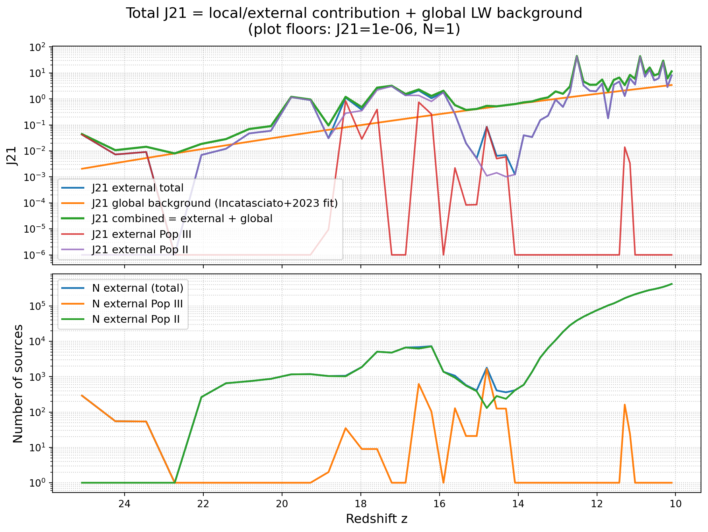
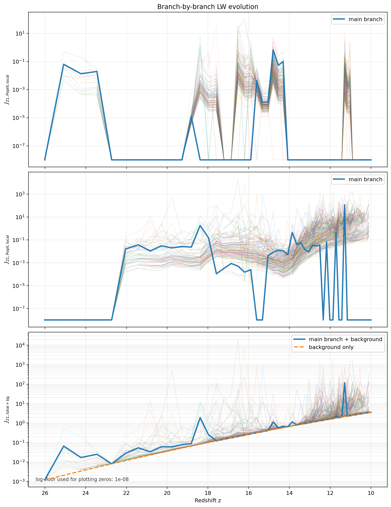

Research directions
First stars and galactic building blocks
My PhD will focus on the physics of the first generations of stars and galaxies and how their feedback enriches the surrounding medium with metals. I am particularly interested in:
- How metals from Population III supernovae mix into nearby haloes
- When, where, and how metal-enriched (Pop II) stars can form
- The role of small “building block” systems in assembling larger galaxies
A key theme is to connect simulation results to simplified physical pictures that help us understand which processes really control star formation in the early Universe.
Methods and tools
- Hydrodynamical and N-body simulations
- Analysis of high-resolution cosmological simulation data
- Python and compiled-language (e.g. C / Fortran) workflows on HPC systems
- Use of auxiliary functionals and Lyapunov-type arguments where useful
During my PhD I hope to combine detailed simulations with semi-analytic modelling to connect early-time physics to observational constraints from JWST and future 21-cm or spectroscopic surveys.
Lyman–Werner radiation in early haloes
As part of my current research work, I analyse the Lyman–Werner (LW) radiation environment around early galaxies. LW radiation plays a key role in regulating the formation of molecular hydrogen and therefore the formation of Population III stars.
The figure below shows an example of the LW background evolution in a cosmological simulation, combining contributions from Population II and Population III stars with a global background model.

The figure below shows the branch-by-branch evolution of the Pop III, Pop II, and total \(J_{21}\) contributions at the shell of the halo as a function of redshift. The thick blue curve highlights the main branch, while the fainter curves correspond to other branches in the merger tree.
